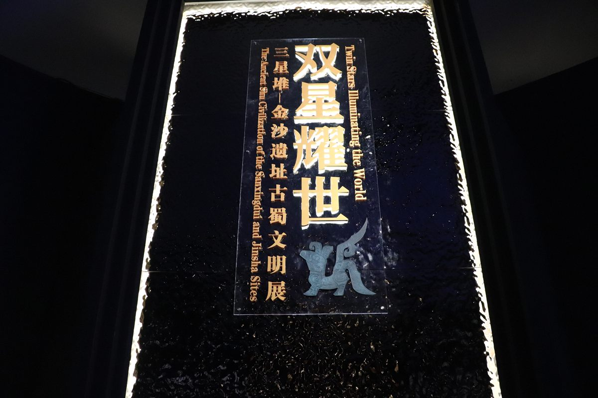
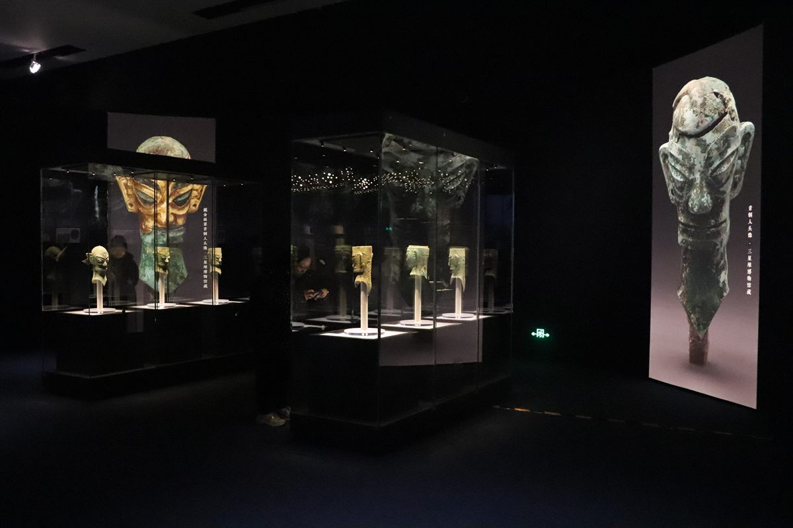
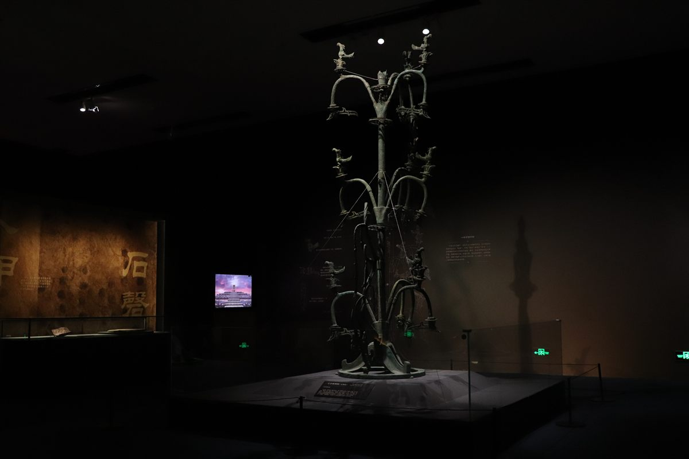
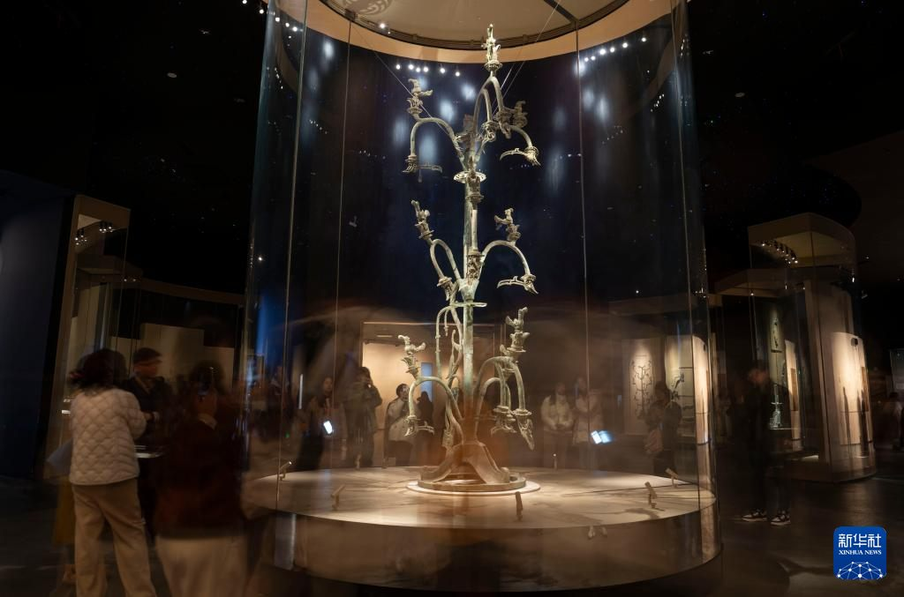

Jinsha · 古蜀文明
四鸟绕日，一飞千年
2001年的一个建筑工地，意外揭开了沉睡了三千年的古蜀王朝。太阳神鸟金饰从中飞出，成为中国文化遗产的标志。
Introduction
金沙遗址位于成都市区西部青羊区，距今约3200至2600年，与三星堆同属古蜀文明的不同阶段。这里出土了金器、铜器、玉器、象牙等珍贵文物数万件，其中太阳神鸟金饰以其精美的工艺与深厚寓意，被确定为中国文化遗产标志。
太阳神鸟金饰是「中国文化遗产标志」，代表中华文明的灿烂与传承。
博物馆坐拥原址遗迹，地铁直达，是成都市区最方便的古蜀课堂。
太阳神鸟、金面具等器物，展现古蜀人对太阳的极致崇拜。
Deep Dive

整件金饰厚度仅0.02厘米，重约20克，由金箔锤揲而成。外圈四只神鸟首尾相接，内圈十二道旋转光芒，寓意「四鸟负日」与十二月令，工艺之精令人叹为观止。

金沙遗址的祭祀区面积超过1.5万平方米，出土了层层叠压的象牙、金器、玉器与青铜器，场面之宏大让人想象当年的祭祀盛况，被誉为「打开古蜀王都的钥匙」。

金沙的太阳神鸟与三星堆的青铜太阳轮遥相呼应，铜立人、金面具等器物风格一脉相承。学界普遍认为，金沙是三星堆文明衰落后古蜀权力中心的转移。

博物馆在遗址原址上建成，遗迹馆保留着祭祀区发掘现场，陈列馆展示「太阳神鸟」等精品，园林区乌木林与鹿苑也值得一逛。
FAQ
Key Points
太阳神鸟金饰，中国文化遗产标志。别忘了在出馆前盖一枚太阳神鸟印章。
遗迹馆看现场，陈列馆看精品，顺序建议「遗迹→陈列」。
实名预约+周一闭馆，节假日务必错峰。
地铁7号线直达，市区游可轻松安排半天。